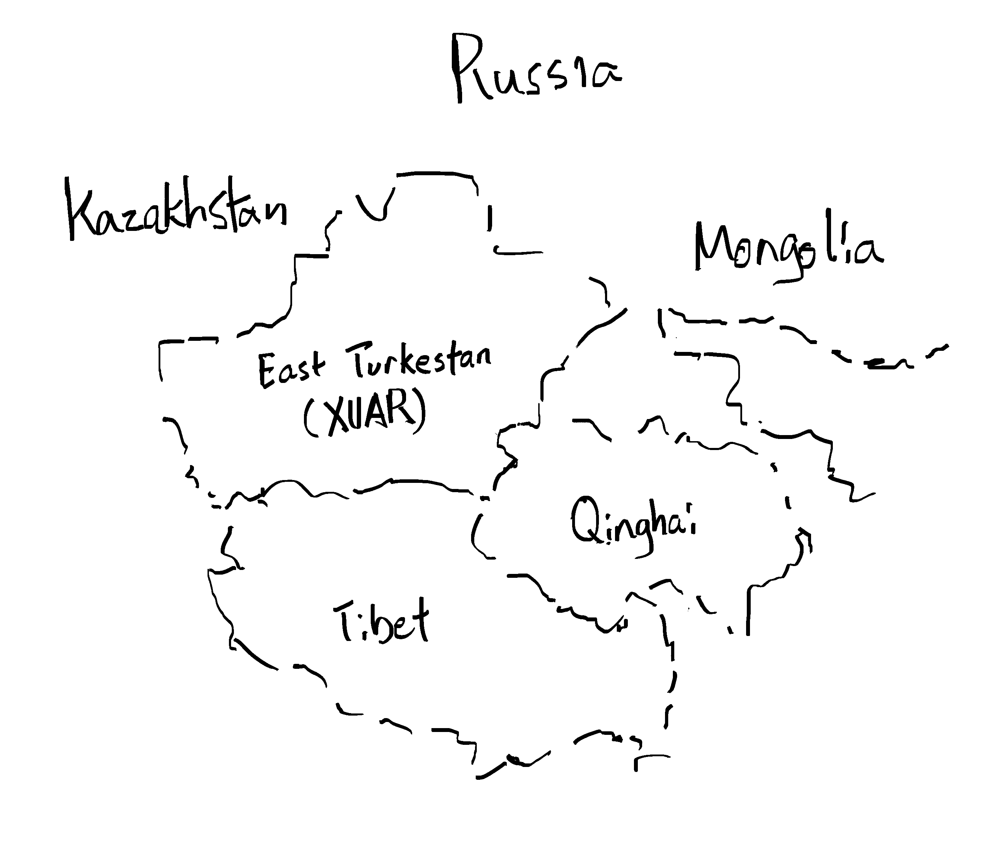

Xinjiang (XUAR) and its surroundings
The Uyghur are a people whose history spans thousands of years. They reside in Central Asia, where the continuous influence and friction between the many different peoples has created a region of conflict and culture.
The home of the Uyghur people, the region currently known as Xinjiang, was situated in the middle of the Silk Road. The northern and southern routes joined at the oasis city of Kashgar, and as a result it became a major trade center.
Throughout their history, the Uyghur people have been influenced by nearby powers, including the Mongols, Russia, Britain, and Turkey starting from the late 19th century until the fall of the Ottoman Empire shortly after the end of World War I. [1] Their culture today can be said to be "forged from Iranic, Semitic, Turkic, Mongolic, Indic, and Chinese influences." [0]
With the expansion of the Qarakhanid Khanate in the eleventh century, Islam began to spread its influence into the Xinjiang area, at the time dominated by Buddhism, Zoroastrianism, Christianity, and Manichaeism. [0]
In 1884, the Manchu-founded Qing Empire annexed what was at the time known as Dzungaria, once the homeland of the Dzungar tribal people, and gave the area its current name Xinjiang, "the new dominion." [0][1]
In 1911, Xinjiang became part of the Republic of China under the Kuomintang. There have been two uprisings since then, briefly forming the First East Turkestan Republic from 1933 to 1934 and later the Second East Turkestan Republic from 1944 until 1949 when it became incorporated into the People's Republic of China as the Xinjiang Uyghur Autonomous Region (XUAR). [0][1]
Nowadays Uyghurs in Xinjiang are a primarily Sunni Muslim group of roughly 10 million, representing nearly half of the Xinjiang population. [2]